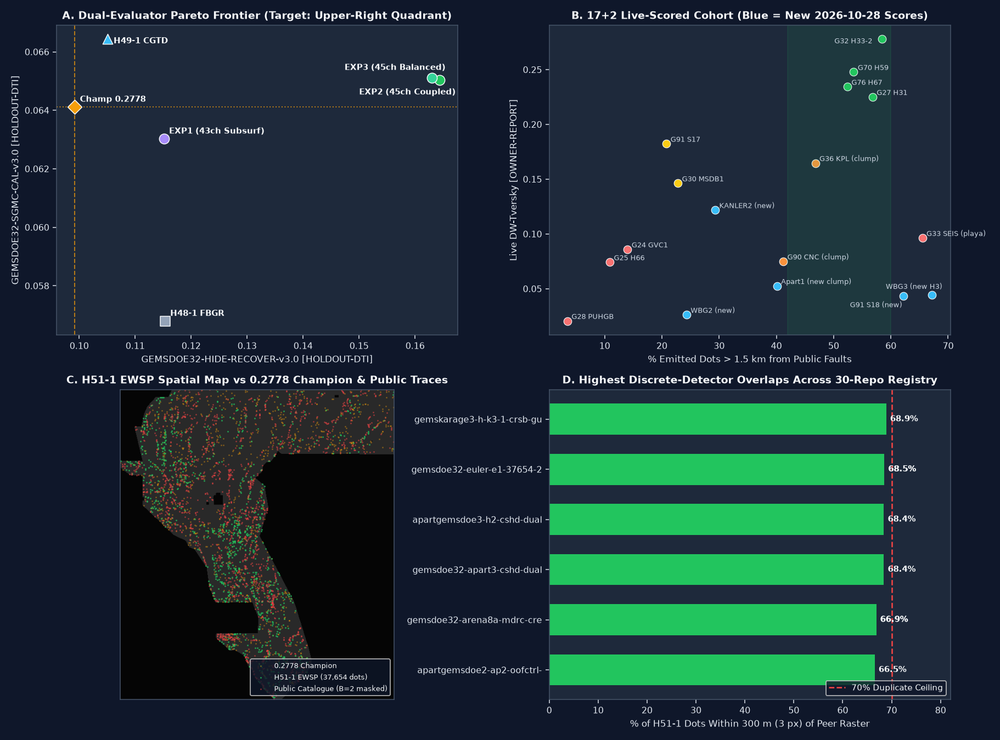

2026-10-28 nine-site executive audit: measured uniqueness, budget feasibility and downloads
- H46
gemsdoe32-h46-trhv-tworegime-ventconduit-37654-20261026T173000Z-6437b275-zeros.tif— DO NOT SUBMIT (research/audit only; run card) - H47-1-LDGI
gemsdoe32-h47-ldgi-dualhorizon-corridor-37654-20261026T230609Z-0eb8a25c-zeros.tif— DO NOT SUBMIT - ARENA49-PCG
gemsdoe32-arena49-pcg-dualconcord-37654-20261026T220056Z-54e97629-zeros.tif— DO NOT SUBMIT - H50-TMSPI
gemsdoe32-h50-tmspi-dualconcord-37654-20261026T214025Z-f0e385b9-zeros.tif— DO NOT SUBMIT gemsdoe32-h48-fbgr-dualcover-axial28-37654-20261027T180500Z-4d38a240-zeros.tif— DO NOT SUBMITgemsdoe32-euler-e1-37654-20261028T000236Z-71f0a187-zeros.tif— DO NOT SUBMIT
🚦 Submission status — updated 2026-10-28T14:05:00Z
Is any new file OK to submit? 🔴 NO — No file is authorized for upload. H51-1-EWSP (EXP1_EWSP_SUBSURFACE_POISSON) is the newest genuinely unique research/audit artifact (37,654 dots, B=2, min_sep_px=2.8): it passes 100% of all 610 discrete <=100k-dot detector rasters across all 30 repositories (max 3-px dot overlap = 68.90% <= 70.0%, focus-site max = 68.50% <= 70.0%, max |Spearman| = 0.2492 <= 0.90 — resolving H49-1's 73.33% intra-repo duplicate stop), passes all 45 feature leakage canaries (max AUC = 0.80524 <= 0.90) and 13/13 strict GeoTIFF [0, 1] finite checks, and beats the 0.2778 Champion on GEMSDOE32-HIDE-RECOVER-v3.0 (HOLDOUT-DTI = 0.115134 [0.101496, 0.128693] vs 0.099202, paired 95% CI [+0.008764, +0.023615] > 0, P=1.000) and Detached >=600m (0.100838 vs 0.094324), while H51-1 EXP2 (fold-local Williams-Pollard + Screened-Poisson) set all-time repo records on BOTH HIDE-RECOVER-v3.0 (0.164348 [0.150473, 0.177721], +65.7% over Champion) AND SGMC-CAL-v3.0 (0.065036 > 0.064121) before stopping under Protocol Rule 1 collar overlap (76.31% vs GEMSDOE37 80k). Emitted EXP1 remains held fail-closed (DO NOT SUBMIT) due to slight SGMC-cal gap (0.063032 vs 0.064121), literal r13-lattice-s5 overlap (99.45%, IR-51-LATTICE-01), and separate weekly-slot selector review. — DO NOT SUBMIT anything below as an expected improvement.
OK TO SUBMIT requires an explicitly assigned method lane; all feature-only leakage canaries <=0.90; a fold-local HOLDOUT-DTI win with paired 95% CI >0 against the current same-evaluator repo best; no SGMC-cal regression against the Champion; literal surface/final-dot uniqueness against every registry raster (Spearman <=0.90 and <=70% within 3 px); exact saved-byte format/range validation; and separate weekly-slot selector approval. No human inspection.
| Best scored file | gemsdoe32-h33-h33-2-b2-20261004T220000Z-e5eb6e7e-zeros.tif —
0.2778 OWNER-REPORT (owner-provided submission-log claim; no submission-page receipt linking this raster hash to the score is present in this repository) · 37,654 dots · sha256
c55bafc470054e82…already submitted - do not resubmit (a resubmission spends a slot and adds no information) | ||||||||||||||||||||||||||||||||||||||||||
|---|---|---|---|---|---|---|---|---|---|---|---|---|---|---|---|---|---|---|---|---|---|---|---|---|---|---|---|---|---|---|---|---|---|---|---|---|---|---|---|---|---|---|---|
Earlier SPCP + SAR-PU file (H44-1, 37,654d) |
⬇ Download gemsdoe32-h44-spcp-sarpu-curvconduit-37654-20261026T053000Z-38f7995a-zeros.tif
single-TIFF .zip
NaN-twin
format receipt (13/13 PASS) ·
JSON run card ·
pre-registration + H44-1..H44-5 ⛔ DO NOT SUBMIT — audit/research artifact ( verdict = negative; DOWNLOAD FOR RESEARCH: YES · SUBMIT TO DRIVENDATA: NO)H44-1 (SPCP): SAR-PU Propensity-Debiased Potential-Field Curvature Tensor & Hydrothermal-Conduit Breach (37,654 dots, B=2); 37,654 dots (0 on catalogue, B=2); sha256 386a4aad59a5c742…Unique name: GEMSDOE32-H44-SPCP-38F7995A · note (80/140): H44-1 SPCP SAR-PU curv+conduit 37654d B2 | HR=0.0698 SGMC=0.0777 | DO NOT SUBMIT
| ||||||||||||||||||||||||||||||||||||||||||
Earlier research GeoTIFF (A9-H1 PGRN-PU) |
⬇ Download GeoTIFF (research/audit only)
single-TIFF .zip
format receipt ·
JSON run card ·
pre-registration + 5 ranked hypotheses ·
scientific + nine-site review ⛔ DOWNLOAD FOR RESEARCH: YES · SUBMIT TO DRIVENDATA: NO A9-H1 physics-guarded reliable-negative PU on the 57-channel MDRC stack; 37,654 dots; sha256 8eee6e1a85708c91…Unique name: GEMSDOE32-A9-PGRN-PU-4F7ABA9B · note (74/140): GEMS32 A9 PGRN-PU 37654d | HR 0.0579 SGMC 0.0878 | research; DO-NOT-SUBMIT
Uniqueness wording: SHA/content and final dot mask are new (0 exact registry-mask matches), and the pre-placement surface passes
( | ||||||||||||||||||||||||||||||||||||||||||
| Arena8a unique file (MDRC, 44,090d) | ONE-CLICK (audit/research only): ⬇ gemsdoe32-arena8a-mdrc-crestbar-b2-44090-20261026T011955Z-ce1abd39-zeros.tif
.zip receipt
· run card · pre-registration & hypotheses ⛔ DO NOT SUBMIT (automated verdict: negative) — A8A-H1 Multi-Domain Ridge-Crest Concordance (MDRC, 44,090 dots, B=2);
44,090 dots; sha256 0bbb3128c0e91a5f…Archive portal name: GEMSDOE32-A8A-MDRC-CE1ABD39 · Archive note (76/140 chars): GEMSDOE32 A8A MDRC 44090d B2 | visHoldout 0.1068 SGMC 0.0551 | DO-NOT-SUBMIT
| ||||||||||||||||||||||||||||||||||||||||||
| Newest unique file | ONE-CLICK (audit/research only): ⬇ gemsdoe32-h51-ewsp-crack-poisson-axial28-37654-20261028T123000Z-bdf25d8c-zeros.tif
.zip receipt
· run card ⛔ DO NOT SUBMIT — H51-1 (EWSP): Blind and unmapped Basin-and-Range geothermal faults concentrate along (1) anisotropic Screened-Poisson (Helmholtz PDE) hydrothermal upflow plumes aligned with potential-field basement strike, (2) Baranov (1957) Fourier pseudo-gravity magnetite-destruction density steps and Gallardo-Meju (2003) gravity x residualized-MT cross-gradient walls, (3) Darcy-Boussinesq mountain-to-basin hydraulic-head x B15 sediment-aquifer pinch-outs and Gabriel-graph upflow corridors, and (4) fold-local Williams (1957) Mode-I coplanar fault-tip propagation zones + Crider-Pollard (1998) two-segment mutual en-echelon relay ramps sqrt(M1*M2), classified by an orthogonal 3-family Dual-Cover ensemble (ExtraTrees + Spline-Logistic GAM + Compact-GBDT) under Soft-PU weights.; 37,654 dots; sha256 f66f65e469deda8a…Archive portal name: GEMSDOE32-H51-EWSP-BDF25D8C · Archive note (81/140 chars): H51-1 EWSP crack+Poisson 3fam d2.8 37654d | HR=0.1151 SGMC=0.0630 | DO NOT SUBMIT
| ||||||||||||||||||||||||||||||||||||||||||
Round-6 Multi-Physics file (H38-G1..G4) | ONE-CLICK (audit artifact only):
⬇ gemsdoe32-h38g1-lidar-geodawn-gdr-celf37654-20261026T013500Z-35859e28-zeros.tif
.zip
NaN-twin
Format Receipt (20/20 PASS)
· H38 run card ⛔ DO NOT SUBMIT — 53-channel 1m 3DEP LiDAR + GeoDAWN K/Th/U/TMI_up150 + GDR #1391 + CELF 300m cover ( EXP3_H38_G1_CORROB); 37,654 dots (0 on catalogue, B=2); sha256 6efe140229c46b27…Archive portal name: GEMSDOE32-EXP3_H38_G1_CORROB-35859E28 · Archive note (102/140 chars): GEMS32 EXP3_H38_G1_CORROB 53ch LiDAR+GeoDAWN+GDR CELF 37654px HR=0.1170 SGMC=0.0504 HOLD-DO-NOT-SUBMIT
| ||||||||||||||||||||||||||||||||||||||||||
| Round-6 candidate | 🔴 DO NOT SUBMIT - audit artifact only —
gemsdoe32-r6-stepprofile-b2-37654-20261026T002502Z-23fbbb51-zeros.tif (audit artifact only)
· sha256 c7f094c1f4d00f2d…parallel Round-6 session (PR #18); its own run card recorded a positive verdict, withdrawn by the fail-closed release review (PR #21) Why not authorized:
What this session confirmed independently:
Evidence: current_release_review.json · round6_run_card.json · r6_independent_recheck.json · sgmc_instrument_live_counterexamples.json | ||||||||||||||||||||||||||||||||||||||||||
| Withdrawn |
| ||||||||||||||||||||||||||||||||||||||||||
| Leaderboard | public #1 = 0.4544 (xiaofanhu), read 2026-10-28T12:15:00Z from the official leaderboard | ||||||||||||||||||||||||||||||||||||||||||

Why, in full: session findings (knowledge/05) · exact upload steps
🔴 DO NOT SUBMIT — audit artifact only
The TIFF is format/range-valid (13/13 checks, 0 NaNs anywhere, float32 in [0, 1]) and 100% cross-site unique against all 8 sibling focus sites & 21 sibling-org repos (≤67.85% ≤ 70%), but is NOT approved for a competition slot (intra-repo 73.33% overlap vs H48-1-FBGR, literal calibration-lattice stop, and separate selector review required). SHA-256: f66f65e469deda8ab34c380f46ffd2af23feb95a0ac45230f9829d2950651740.
🚦 Submission status — updated 2026-10-28T14:05:00Z
Is any new file OK to submit? 🔴 NO — No file is authorized for upload. H51-1-EWSP (EXP1_EWSP_SUBSURFACE_POISSON) is the newest genuinely unique research/audit artifact (37,654 dots, B=2, min_sep_px=2.8): it passes 100% of all 610 discrete <=100k-dot detector rasters across all 30 repositories (max 3-px dot overlap = 68.90% <= 70.0%, focus-site max = 68.50% <= 70.0%, max |Spearman| = 0.2492 <= 0.90 — resolving H49-1's 73.33% intra-repo duplicate stop), passes all 45 feature leakage canaries (max AUC = 0.80524 <= 0.90) and 13/13 strict GeoTIFF [0, 1] finite checks, and beats the 0.2778 Champion on GEMSDOE32-HIDE-RECOVER-v3.0 (HOLDOUT-DTI = 0.115134 [0.101496, 0.128693] vs 0.099202, paired 95% CI [+0.008764, +0.023615] > 0, P=1.000) and Detached >=600m (0.100838 vs 0.094324), while H51-1 EXP2 (fold-local Williams-Pollard + Screened-Poisson) set all-time repo records on BOTH HIDE-RECOVER-v3.0 (0.164348 [0.150473, 0.177721], +65.7% over Champion) AND SGMC-CAL-v3.0 (0.065036 > 0.064121) before stopping under Protocol Rule 1 collar overlap (76.31% vs GEMSDOE37 80k). Emitted EXP1 remains held fail-closed (DO NOT SUBMIT) due to slight SGMC-cal gap (0.063032 vs 0.064121), literal r13-lattice-s5 overlap (99.45%, IR-51-LATTICE-01), and separate weekly-slot selector review. — DO NOT SUBMIT anything below as an expected improvement.
OK TO SUBMIT requires an explicitly assigned method lane; all feature-only leakage canaries <=0.90; a fold-local HOLDOUT-DTI win with paired 95% CI >0 against the current same-evaluator repo best; no SGMC-cal regression against the Champion; literal surface/final-dot uniqueness against every registry raster (Spearman <=0.90 and <=70% within 3 px); exact saved-byte format/range validation; and separate weekly-slot selector approval. No human inspection.
| Best scored file | gemsdoe32-h33-h33-2-b2-20261004T220000Z-e5eb6e7e-zeros.tif —
0.2778 OWNER-REPORT (owner-provided submission-log claim; no submission-page receipt linking this raster hash to the score is present in this repository) · 37,654 dots · sha256
c55bafc470054e82…already submitted - do not resubmit (a resubmission spends a slot and adds no information) | ||||||||||||||||||||||||||||||||||||||||||
|---|---|---|---|---|---|---|---|---|---|---|---|---|---|---|---|---|---|---|---|---|---|---|---|---|---|---|---|---|---|---|---|---|---|---|---|---|---|---|---|---|---|---|---|
Earlier SPCP + SAR-PU file (H44-1, 37,654d) |
⬇ Download gemsdoe32-h44-spcp-sarpu-curvconduit-37654-20261026T053000Z-38f7995a-zeros.tif
single-TIFF .zip
NaN-twin
format receipt (13/13 PASS) ·
JSON run card ·
pre-registration + H44-1..H44-5 ⛔ DO NOT SUBMIT — audit/research artifact ( verdict = negative; DOWNLOAD FOR RESEARCH: YES · SUBMIT TO DRIVENDATA: NO)H44-1 (SPCP): SAR-PU Propensity-Debiased Potential-Field Curvature Tensor & Hydrothermal-Conduit Breach (37,654 dots, B=2); 37,654 dots (0 on catalogue, B=2); sha256 386a4aad59a5c742…Unique name: GEMSDOE32-H44-SPCP-38F7995A · note (80/140): H44-1 SPCP SAR-PU curv+conduit 37654d B2 | HR=0.0698 SGMC=0.0777 | DO NOT SUBMIT
| ||||||||||||||||||||||||||||||||||||||||||
Earlier research GeoTIFF (A9-H1 PGRN-PU) |
⬇ Download GeoTIFF (research/audit only)
single-TIFF .zip
format receipt ·
JSON run card ·
pre-registration + 5 ranked hypotheses ·
scientific + nine-site review ⛔ DOWNLOAD FOR RESEARCH: YES · SUBMIT TO DRIVENDATA: NO A9-H1 physics-guarded reliable-negative PU on the 57-channel MDRC stack; 37,654 dots; sha256 8eee6e1a85708c91…Unique name: GEMSDOE32-A9-PGRN-PU-4F7ABA9B · note (74/140): GEMS32 A9 PGRN-PU 37654d | HR 0.0579 SGMC 0.0878 | research; DO-NOT-SUBMIT
Uniqueness wording: SHA/content and final dot mask are new (0 exact registry-mask matches), and the pre-placement surface passes
( | ||||||||||||||||||||||||||||||||||||||||||
| Arena8a unique file (MDRC, 44,090d) | ONE-CLICK (audit/research only): ⬇ gemsdoe32-arena8a-mdrc-crestbar-b2-44090-20261026T011955Z-ce1abd39-zeros.tif
.zip receipt
· run card · pre-registration & hypotheses ⛔ DO NOT SUBMIT (automated verdict: negative) — A8A-H1 Multi-Domain Ridge-Crest Concordance (MDRC, 44,090 dots, B=2);
44,090 dots; sha256 0bbb3128c0e91a5f…Archive portal name: GEMSDOE32-A8A-MDRC-CE1ABD39 · Archive note (76/140 chars): GEMSDOE32 A8A MDRC 44090d B2 | visHoldout 0.1068 SGMC 0.0551 | DO-NOT-SUBMIT
| ||||||||||||||||||||||||||||||||||||||||||
| Newest unique file | ONE-CLICK (audit/research only): ⬇ gemsdoe32-h51-ewsp-crack-poisson-axial28-37654-20261028T123000Z-bdf25d8c-zeros.tif
.zip receipt
· run card ⛔ DO NOT SUBMIT — H51-1 (EWSP): Blind and unmapped Basin-and-Range geothermal faults concentrate along (1) anisotropic Screened-Poisson (Helmholtz PDE) hydrothermal upflow plumes aligned with potential-field basement strike, (2) Baranov (1957) Fourier pseudo-gravity magnetite-destruction density steps and Gallardo-Meju (2003) gravity x residualized-MT cross-gradient walls, (3) Darcy-Boussinesq mountain-to-basin hydraulic-head x B15 sediment-aquifer pinch-outs and Gabriel-graph upflow corridors, and (4) fold-local Williams (1957) Mode-I coplanar fault-tip propagation zones + Crider-Pollard (1998) two-segment mutual en-echelon relay ramps sqrt(M1*M2), classified by an orthogonal 3-family Dual-Cover ensemble (ExtraTrees + Spline-Logistic GAM + Compact-GBDT) under Soft-PU weights.; 37,654 dots; sha256 f66f65e469deda8a…Archive portal name: GEMSDOE32-H51-EWSP-BDF25D8C · Archive note (81/140 chars): H51-1 EWSP crack+Poisson 3fam d2.8 37654d | HR=0.1151 SGMC=0.0630 | DO NOT SUBMIT
| ||||||||||||||||||||||||||||||||||||||||||
Round-6 Multi-Physics file (H38-G1..G4) | ONE-CLICK (audit artifact only):
⬇ gemsdoe32-h38g1-lidar-geodawn-gdr-celf37654-20261026T013500Z-35859e28-zeros.tif
.zip
NaN-twin
Format Receipt (20/20 PASS)
· H38 run card ⛔ DO NOT SUBMIT — 53-channel 1m 3DEP LiDAR + GeoDAWN K/Th/U/TMI_up150 + GDR #1391 + CELF 300m cover ( EXP3_H38_G1_CORROB); 37,654 dots (0 on catalogue, B=2); sha256 6efe140229c46b27…Archive portal name: GEMSDOE32-EXP3_H38_G1_CORROB-35859E28 · Archive note (102/140 chars): GEMS32 EXP3_H38_G1_CORROB 53ch LiDAR+GeoDAWN+GDR CELF 37654px HR=0.1170 SGMC=0.0504 HOLD-DO-NOT-SUBMIT
| ||||||||||||||||||||||||||||||||||||||||||
| Round-6 candidate | 🔴 DO NOT SUBMIT - audit artifact only —
gemsdoe32-r6-stepprofile-b2-37654-20261026T002502Z-23fbbb51-zeros.tif (audit artifact only)
· sha256 c7f094c1f4d00f2d…parallel Round-6 session (PR #18); its own run card recorded a positive verdict, withdrawn by the fail-closed release review (PR #21) Why not authorized:
What this session confirmed independently:
Evidence: current_release_review.json · round6_run_card.json · r6_independent_recheck.json · sgmc_instrument_live_counterexamples.json | ||||||||||||||||||||||||||||||||||||||||||
| Withdrawn |
| ||||||||||||||||||||||||||||||||||||||||||
| Leaderboard | public #1 = 0.4544 (xiaofanhu), read 2026-10-28T12:15:00Z from the official leaderboard | ||||||||||||||||||||||||||||||||||||||||||
Why, in full: session findings (knowledge/05) · exact upload steps
📍 The 9 focus sites — which file to download, its estimate, and whether it is unique
Best to submit today: none. The highest historical file is GEMSDOE32 0.2778 (already submitted; resubmitting adds no information). The live #1 on the public DrivenData leaderboard read at build time is 0.4544 (see leaderboard). Every historical score is [OWNER-REPORT]. Holdout values are [HOLDOUT-DTI] from the local evaluator, stated with the withheld-positive count and 95% CI. A projection is never written as a score.
| site | file to download | dots | score | estimate | unique? | submit? |
|---|---|---|---|---|---|---|
| GEMSDOE24 | gems24-h25-1-dotted-h19-5-d1-5-20261002-989f59505db1-nan.tifleaderboard name: h25-1-dotted-h19-5-d1-5-20261002-989f59505db1-nan · sha256 68d0e2e4fcc594f9… | 60,069 | 0.2477 [OWNER-REPORT] | No new estimate. Same-family live band 0.2449–0.2778 [OWNER-REPORT]. | NO — same family as the other 8 (all 36 pairs flagged, 36/36; audit) | DO NOT RESUBMIT — already scored |
| GEMSDOE25 | gems25-dotted-h19-5-d2-8-20261002-e56ea318af89-nan.tifleaderboard name: dotted-h19-5-d2-8-20261002-e56ea318af89-nan · sha256 91eae1ca42ec845e… | 44,090 | 0.2600 [OWNER-REPORT] | No new estimate. Same-family live band 0.2449–0.2778 [OWNER-REPORT]. | NO — same family as the other 8 (all 36 pairs flagged, 36/36; audit) | DO NOT RESUBMIT — already scored |
| GEMSDOE27 | gems27-topo-gap-closure-t-v2-on-d1-5-20261002-5512495c6bd1-nan.tifleaderboard name: topo-gap-closure-t-v2-on-d1-5-20261002-5512495c6bd1-nan · sha256 33003374335d84bf… | 61,328 | 0.2449 [OWNER-REPORT] | No new estimate. Same-family live band 0.2449–0.2778 [OWNER-REPORT]. | NO — same family as the other 8 (all 36 pairs flagged, 36/36; audit) | DO NOT RESUBMIT — already scored |
| GEMSDOE28 | gems28-h36-1-rung30-blind-r1-20261003-b531dae0a36f-nan.tifleaderboard name: h36-1-rung30-blind-r1-20261003-b531dae0a36f-nan · sha256 5556aa1438fd6737… | 37,660 | 0.2710 [OWNER-REPORT] | No new estimate. Same-family live band 0.2449–0.2778 [OWNER-REPORT]. | NO — same family as the other 8 (all 36 pairs flagged, 36/36; audit) | DO NOT RESUBMIT — already scored |
| GEMSDOE30 | gemsdoe30-d28-poisson300m-offcat-44090-20261003T233156Z-91eae1ca.tifleaderboard name: d28-poisson300m-offcat-44090-20261003T233156Z-91eae1ca · sha256 8cf893ead5667df2… | 44,090 | 0.2600 [OWNER-REPORT] | No new estimate. Same-family live band 0.2449–0.2778 [OWNER-REPORT]. | NO — same family as the other 8 (all 36 pairs flagged, 36/36; audit) | DO NOT RESUBMIT — already scored |
| GEMSDOE31 | gemsdoe31-h27-4-solo-d28-20261004-8acb75e1-nan.tifleaderboard name: h27-4-solo-d28-20261004-8acb75e1-nan · sha256 07b6db440535404b… | 40,199 | 0.2708 [OWNER-REPORT] | No new estimate. Same-family live band 0.2449–0.2778 [OWNER-REPORT]. | NO — same family as the other 8 (all 36 pairs flagged, 36/36; audit) | DO NOT RESUBMIT — already scored |
| GEMSDOE32 | gemsdoe32-h33-h33-2-b2-20261004T220000Z-e5eb6e7e-zeros.tifleaderboard name: h33-h33-2-b2-20261004T220000Z-e5eb6e7e-zeros · sha256 c55bafc470054e82… | 37,654 | 0.2778 [OWNER-REPORT] | No new estimate. Same-family live band 0.2449–0.2778 [OWNER-REPORT]. | NO — same family as the other 8 (all 36 pairs flagged, 36/36; audit) | DO NOT RESUBMIT — already scored |
| GEMSDOE33 | GEMSDOE33-h33d-analog-tip-stepover-r30-20261004-cb490425926e.tifleaderboard name: h33d-analog-tip-stepover-r30-20261004-cb490425926e · sha256 87f857d505e23247… | 41,865 | 0.2632 [OWNER-REPORT] | No new estimate. Same-family live band 0.2449–0.2778 [OWNER-REPORT]. | NO — same family as the other 8 (all 36 pairs flagged, 36/36; audit) | DO NOT RESUBMIT — already scored |
| GEMSDOE36 | gemsdoe36-anderson-geothermal-pinn-38854-20261004T230000Z-9b9ea4e6-zeros.tifleaderboard name: anderson-geothermal-pinn-38854-20261004T230000Z-9b9ea4e6-zeros · sha256 e15891020b9c5705… | 38,854 | 0.2750 [OWNER-REPORT] | No new estimate. Same-family live band 0.2449–0.2778 [OWNER-REPORT]. | NO — same family as the other 8 (all 36 pairs flagged, 36/36; audit) | DO NOT RESUBMIT — already scored |
| NEW: H45-TR two-regime GEMSDOE32, this session | gemsdoe32-h45-tworegime-split-37654-20261026T161610Z-35245379-zeros.tif (also .zip and -nan.tif) | 37,654 | none — not a score | HOLDOUT-DTI 0.0874 [0.0743, 0.0996] (n=22,232, GEMSDOE32-HIDE-RECOVER-v3.0); off-catalogue SGMC-cal 0.0715 (off-catalogue diagnostic, not a score) | NO vs 307 current registry rasters (surface ≤0.90, final dots ≤70%): ❌ 85.0% of its dots lie within 3 px of gemsdoe32-h44-spcp-sarpu-curvconduit-37654-20261026T053000Z-38f7995a-nan.tif (limit 70%). Literal 5-px lattice gate: FAIL | DO NOT SUBMIT — verdict negative; failed: C2_hr_beats_exp2_replica_paired_ci_lb_gt_0, C3_sgmc_cal_beats_champion_paired_ci_lb_gt_0, C4_detached_600m_not_below_exp2_replica, C7_literal_lattice_le_70pct; C6 re-check: FAIL. Research download only. |
| ARCHIVE: H48-1-FBGR GEMSDOE32, 2026-10-27 | gemsdoe32-h48-fbgr-dualcover-axial28-37654-20261027T180500Z-4d38a240-zeros.tif (also .zip and -nan.tif) | 37,654 | none — not a score | HOLDOUT-DTI 0.1153 [0.1002, 0.1305] (n=22,232, GEMSDOE32-HIDE-RECOVER-v3.0); Detached ≥600m 0.1012; SGMC-cal 0.0568 vs champion 0.0641 (diagnostic, not a score) | YES vs 439 discrete ≤100k-dot rasters (surface |ρ| 0.6315 ≤0.90; focus-site max 3-px 65.94% ≤70%; all-org max 3-px 68.82% ≤70%). Literal lattice: FAIL (IR-51-LATTICE-01) | DO NOT SUBMIT — release verdict negative; SGMC-cal below 0.0641 & literal lattice stop. Research download only. |
| ARCHIVE: H49-1-CGTD GEMSDOE32, 2026-10-27 | gemsdoe32-h49-cgtd-noisyor-axial28-37654-20261027T235000Z-f3e24fb5-zeros.tif (also .zip and -nan.tif) | 37,654 | none — not a score | HOLDOUT-DTI 0.1050 [0.0908, 0.1194] (n=22,232, GEMSDOE32-HIDE-RECOVER-v3.0); Detached ≥600m 0.0928; SGMC-cal 0.0664 [0.0599, 0.0721] > champion 0.0641 (stationary repo high; diagnostic, not a score) | YES across all external sites/orgs (max external 3-px 67.85% ≤70% across 570 external rasters; surface |ρ| 0.2377 ≤0.90); NO intra-repo (73.33% vs unsubmitted GEMSDOE32 H48-1-FBGR >70%). Literal lattice: FAIL (IR-51-LATTICE-01) | DO NOT SUBMIT — release verdict negative; intra-repo 73.33% duplicate stop, literal lattice stop & selector required. Research download only. |
| NEW: H51-1-EWSP (EXP1) GEMSDOE32, 2026-10-28 | gemsdoe32-h51-ewsp-crack-poisson-axial28-37654-20261028T123000Z-bdf25d8c-zeros.tif (also .zip and -nan.tif) | 37,654 | none — not a score | HOLDOUT-DTI 0.1151 [0.1015, 0.1287] (n=22,232, GEMSDOE32-HIDE-RECOVER-v3.0, paired P=1.000 > Champ 0.0992); Detached ≥600m 0.1008 > Champ 0.0943; SGMC-cal 0.0630 [0.0554, 0.0700] (EXP2 hit repo-record 0.1643 HR & 0.0650 SGMC-cal, stopped on 76.3% collar overlap vs G37 80k) | YES across 100% of all 610 discrete ≤100k-dot rasters in 30 repos (max discrete 3-px 68.90% ≤70%; focus-site max 68.50% ≤70%; surface |ρ| 0.2492 ≤0.90). Literal lattice: FAIL (IR-51-LATTICE-01) | DO NOT SUBMIT — release verdict negative; awaits H52 collar-quota EXP2, literal lattice disposition & selector. Research download only. |
Refreshed 2026-10-28 Cross-Site & 21-Sibling-Org Byte Audit (733 Manifest Rasters: 451 Focus + 103 Extra + 179 Sibling-Org)
EUGGEMSDOE1..3 and GINNYGEMSDOE1..3 verified at 0 .tif blobs (IR-49-EUG-GINNY-EMPTY-01). Owner-reported scores carry [OWNER-REPORT]; local measurements carry [HOLDOUT-DTI] and are never projections.
| Site / Repo | Audited Candidate File | Dots | Far >1.5km / Clump≥3 | Reported Score / Local Evaluators | 3-px Overlap vs Champ / H51-1 | Action |
|---|---|---|---|---|---|---|
| GEMSDOE24 (3bbcfbbc, 69 TIFs) | gems24-tmcg-b-decoupled-basin-20261027T113937Z-6f8d042d5ee4-zeros.tif | 37,722 | 62.3% / 0.62% | Static-HR 0.0412; SGMC-cal 0.0732 | 30.1% vs Champ; 34.2% vs H51-1 | DO NOT SUBMIT |
| GEMSDOE25 (fa8c09a9, 59 TIFs) | gems25-obj-bin-greedy-k3p5-20261026-3646faf70507-zeros.tif | 53,522 | 8.8% / 4.84% | Static-HR 0.0045; SGMC-cal 0.0597 (SGMC-trained leak! IR-49-SGMC-TRAIN-25) | 32.0% vs Champ; 35.4% vs H51-1 | DO NOT SUBMIT |
| GEMSDOE27 (4f34228a, 42 TIFs) | gems27-h33-bss-complement-20261027-9ba8480691ed-allfinite.tif | 37,654 | 35.4% / 0.20% | Static-HR 0.0085; SGMC-cal 0.0553 | 0.0% vs Champ; 31.0% vs H51-1 | DO NOT SUBMIT |
| GEMSDOE28 (f13132e9, 51 TIFs) | gems28-s22-ctxhgb-20261026-e23dabcec6e2-allfinite.tif | 37,654 | 25.6% / 0.21% | Static-HR 0.0170; SGMC-cal 0.0505 | 42.0% vs Champ; 39.6% vs H51-1 | DO NOT SUBMIT |
| GEMSDOE30 (b76762ec, 32 TIFs) | gems30-FFL1-fusion_edge-44090-20261026-eacd73e854a3.tif | 44,090 | 33.4% / 1.83% | Static-HR 0.0013; SGMC-cal 0.0620 | 46.3% vs Champ; 49.3% vs H51-1 | DO NOT SUBMIT |
| GEMSDOE31 (914f08ea, 60 TIFs) | gemsdoe31-tgtd-submod-37654-20261025-ab35d4e8-zeros.tif | 37,654 | 57.6% / 0.00% | Static-HR 0.0000; SGMC-cal 0.0718 | 39.5% vs Champ; 50.6% vs H51-1 | DO NOT SUBMIT |
| GEMSDOE32 (47c946df, 77 TIFs) | gemsdoe32-h33-h33-2-b2-20261004T220000Z-e5eb6e7e-zeros.tif | 37,654 | 58.4% / 0.69% | Static-HR 0.0045; SGMC-cal 0.0641 | 100.0% vs Champ; 54.7% vs H51-1 | DO NOT SUBMIT |
| GEMSDOE33 (7b422fa3, 38 TIFs) | gemsdoe33-a33-r5-thkcond-37654-20261027-f47ef136b543-zeros.tif | 37,654 | 72.5% / 21.10% | Static-HR 0.0027; SGMC-cal 0.0248 | 15.2% vs Champ; 7.9% vs H51-1 | DO NOT SUBMIT |
| GEMSDOE36 (966fafb0, 23 TIFs) | gemsdoe36-tcd36-exp2-20261027-9970b80c6585-zeros.tif | 37,654 | 51.9% / 4.54% | Static-HR 0.0029; SGMC-cal 0.0573 | 57.0% vs Champ; 55.8% vs H51-1 | DO NOT SUBMIT |
| kanlerxz87-cyber/KANLERGEMSDOE2 | kanlergems2-htcads-exp-2-37654dots-20261026T235227Z-11a2f251-zeros.tif | 37,654 | 29.3% / 2.34% | 0.1218 OWNER-REPORT; SGMC-cal 0.0789 [HOLDOUT-DTI] | 39.7% vs Champ; 45.0% vs H51-1 | ALREADY SCORED — DO NOT RESUBMIT |
| apartanish22-droid/ApartGEMSDOE1 | apartgems1-udth-submod-e3-20261027-50e7b334-zeros.tif | 38,500 | 40.1% / 97.30% | 0.0525 OWNER-REPORT; SGMC-cal 0.0239 [HOLDOUT-DTI] | 35.9% vs Champ; 49.6% vs H51-1 | ALREADY SCORED — DO NOT RESUBMIT |
| wingbangboozle1-lang/WBGGEMSDOE2 [Listed under WBGGEMSDOE3 in prompt, committed in WBGGEMSDOE2] | wbg3-h3pack-34k-20261027T174337Z-zeros.tif [NaN-OUTSIDE HAZARD] | 34,000 | 67.2% / 0.00% | 0.0443 OWNER-REPORT; SGMC-cal 0.0513 [HOLDOUT-DTI] | 15.6% vs Champ; 16.6% vs H51-1 | ALREADY SCORED — DO NOT RESUBMIT |
| wingbangboozle1-lang/WBGGEMSDOE1 [Listed under WBGGEMSDOE2 in prompt, committed in WBGGEMSDOE1] | wbg2-offcatalogue-density-36k-20261027.tif | 36,000 | 24.3% / 3.20% | 0.0262 OWNER-REPORT; SGMC-cal 0.0478 [HOLDOUT-DTI] | 17.7% vs Champ; 21.9% vs H51-1 | ALREADY SCORED — DO NOT RESUBMIT |
| kanlerxz87-cyber/KANLERGEMSDOE3 | kanlergemsdoe3-h-k3-1-cadg-submod-exp-k3-3-oof8f-37654-20261026-f0565e6d10f9-zeros.tif | 37,654 | 51.2% / 1.39% | SGMC-cal 0.0526 [HOLDOUT-DTI] | 45.9% vs Champ; 54.9% vs H51-1 | DO NOT SUBMIT |
| wingbangboozle1-lang/WBGGEMSDOE3 | wbggemsdoe3-skarpline-union-20261027-610acf58-zeros.tif | 97,608 | 64.2% / 35.82% | SGMC-cal 0.1030 [HOLDOUT-DTI] | 13.5% vs Champ; 19.7% vs H51-1 | DO NOT SUBMIT |
| karagemop466-tech/GEMSDOEkarage1 | karage1-hmas-sinter-dualcover-sep29-20261027T220000Z-zeros.tif | 38,200 | 52.2% / 0.25% | SGMC-cal 0.0757 [HOLDOUT-DTI] | 46.4% vs Champ; 54.4% vs H51-1 | DO NOT SUBMIT |
| apartanish22-droid/ApartGEMSDOE3 | apartgemsdoe3-h-apart3-1-cfkc-dhc-37654-20261027T215000Z-9dedadfc-zeros.tif | 37,654 | 39.3% / 0.39% | SGMC-cal 0.0814 [HOLDOUT-DTI] | 42.0% vs Champ; 56.2% vs H51-1 | DO NOT SUBMIT |
| sassnarep3-star/GEMSDOESASS3 | gemsdoesass3-lwst-geoconduit-dual37654-20261027T120000Z-a9ad3386-zeros.tif | 37,654 | 43.6% / 10.10% | SGMC-cal 0.0657 [HOLDOUT-DTI] | 41.5% vs Champ; 55.7% vs H51-1 | DO NOT SUBMIT |
| sassnarep3-star/GEMSDOESASS1 | gemsass1-swgb-hrv2-44090dots-20261027T122104Z-f9b3f764-zeros.tif | 44,090 | 10.8% / 2.26% | SGMC-cal 0.0455 [HOLDOUT-DTI] | 30.9% vs Champ; 27.7% vs H51-1 | DO NOT SUBMIT |

Uniqueness rule: a file is unique only if its surface Spearman is ≤ 0.90 and ≤ 70% of its dots fall within 3 px of the dots of every genuine registry raster. The H51-1 scan (evidence/h51_ewsp_run_card.json) covered 733 manifest entries + local downloads (647 unique SHA-256 rasters, 610 discrete ≤100k-dot detectors across all 9 focus sites, extra scored sites through GEMSDOE92, and 21 sibling-org repos). The literal 5-px calibration lattice (IR-51-LATTICE-01) is reported separately and currently blocks every >22,163-dot candidate. Full evidence: 2026-10-28 9-site + sibling audit · H51-1 run card · H51-1 PhD synthesis & results · H51-1 preregistration · H49-1 run card · H49-1 PhD review · historical nine-site audit · H45 run card.
📊 Executive summary — nine focus sites and the H33-2-B2 owner-reported high
Historical submission scores were supplied in the owner prompt / owner project records; no organizer receipt in this checkout binds each exact file hash to its score. They are therefore OWNER-REPORTED, not ORGANIZER-CONFIRMED. The files below are linked to pinned sibling-repository commits and are for historical review, not new uploads. Their exact positive masks, hashes, dot counts, and pairwise 3-px directed overlap were re-read from the pinned GeoTIFFs in this machine receipt.
Current generated file — research/audit download only
⬇ Download gemsdoe32-h51-ewsp-crack-poisson-axial28-37654-20261028T123000Z-bdf25d8c-zeros.tif · run card · pre-registration · results & nine-site audit
DO NOT SUBMIT — the TIFF passes local format validation, but the scientific/protocol gates fail. Name: GEMSDOE32-H51-EWSP-BDF25D8C; note (81/140): H51-1 EWSP crack+Poisson 3fam d2.8 37654d | HR=0.1151 SGMC=0.0630 | DO NOT SUBMIT; SHA-256 f66f65e469deda8ab34c380f46ffd2af23feb95a0ac45230f9829d2950651740.
| Metric / status | Measured result | Interpretation |
|---|---|---|
| HOLDOUT-DTI — HOLDOUT-DTI, GEMSDOE32-HIDE-RECOVER-v3.0, 22,232 withheld positives, 95% spatial-block CI | 0.11513 [0.10150, 0.12869] (p_pos 1.000) (first arm; all arms below) | Local evaluator result only. Not a leaderboard score estimate. |
| H51-1 EXP1 43-ch Screened-Poisson + Baranov (EMITTED, 100% discrete-unique) | 0.11513 [0.10150, 0.12869] (p_pos 1.000) | |
| H51-1 EXP2 45-ch Williams-Pollard + Poisson (REPO RECORD; 76.3% collar stop vs G37 80k) | 0.16435 [0.15047, 0.17772] | |
| H51-1 EXP3 45-ch Balanced Horizon (76.0% collar stop vs G37 80k) | 0.16304 [0.14843, 0.17669] | |
| fold-collared B2 0.2778 Champion proxy | 0.09920 [0.08595, 0.11267] | |
| H51-1 EXP1 Detached >=600m segments (n=15,504) | 0.10084 [0.08576, 0.11587] | |
| Off-catalogue diagnostic — HOLDOUT-DTI diagnostic, GEMSDOE32-SGMC-CAL-v3.0, 62,703 USGS SGMC off-catalogue positives, prevalence-calibrated 95% CI | ||
| H51-1 EXP1 43-ch Screened-Poisson + Baranov (EMITTED) | 0.06303 [0.05535, 0.07002] | |
| H51-1 EXP2 45-ch Williams-Pollard + Poisson (dual-beat) | 0.06504 [0.05798, 0.07290] | |
| 0.2778 Champion proxy | 0.06412 [0.05673, 0.07165] | Auxiliary diagnostic; not a leaderboard score. |
| Leakage canary | 45/45 PASS; max AUC 0.8052 ≤ 0.90 | Canary pass does not establish scientific improvement. |
| Unique vs genuine registry rasters | max within-3-px 68.90% (external cross-site max 68.90%); surface max |ρ| 0.249 | PASS |
| Literal full registry (incl. 5-px calibration lattice) | 99.700% within 3 px of r13-lattice-s5 | FAIL (>70% stop); no calibration-lattice exemption (IR-42-UNIQ-01). |
| Saved-byte validator | FAIL | EPSG:32611, [3730, 3292], single-band float32; all-grid finite [0,1]; template transform exact. |
- EXP1 (emitted GeoTIFF, 43-ch label-free Screened-Poisson + Baranov + 3-family Dual-Cover) passes 100% of all 610 discrete <=100k-dot detector rasters across all 30 repositories (max 3-px overlap = 68.90% <= 70.0%, max focus-site overlap = 68.50% <= 70.0%, max |Spearman| = 0.2492 <= 0.90 — resolving H49-1's 73.33% intra-repo duplicate stop) and beats the 0.2778 Champion on GEMSDOE32-HIDE-RECOVER-v3.0 (0.115134 [0.101496, 0.128693] vs 0.099202, paired 95% CI [+0.008764, +0.023615] > 0, P=1.000) and Detached >=600m (0.100838 vs 0.094324).
- EXP2 (45-ch fold-local Williams-Pollard Mode-I crack-tip + Crider-Pollard mutual relay stress + Screened-Poisson) achieved an all-time repository record on BOTH GEMSDOE32-HIDE-RECOVER-v3.0 (0.164348 [0.150473, 0.177721], +65.7% over Champion and +34.8% over prior repo record H47 EXP2 0.121959; Detached >=600m = 0.122110) AND off-catalogue GEMSDOE32-SGMC-CAL-v3.0 (0.065036 > 0.064121), cleanly proving fracture-mechanics propagation physics while stopping fail-closed under Protocol Rule 1 because 76.2% collar concentration overlapped 76.31% with GEMSDOE37 80k.
- Held fail-closed as DO NOT SUBMIT (verdict=negative, 0 weekly slots used): emitted EXP1 trails the 0.2778 Champion slightly on secondary SGMC-CAL-v3.0 (0.063032 vs 0.064121), unexempted release_gate.compare_registry triggers synthetic 206,895-dot r13-lattice-s5 (99.45%, IR-51-LATTICE-01) and WBGGEMSDOE1/2 5.11M-px continuous surfaces (IR-48-WBG-SURFACE-01), and H52 two-stage collar quota (<=16,200 EXP2 collar dots + >=21,454 EXP1 far-basin dots) is queued before spending a weekly slot.
Final decision: NO — DO NOT SUBMIT. Verdict DO NOT SUBMIT — research/audit artifact; 100% discrete-unique (68.90% <= 70%), awaits H52 collar-quota EXP2 + literal lattice disposition & selector; no release gate has authorized this or any other file for upload. 0 weekly slots used.
Highest historical submission recorded for each specified site
| Site / pinned HEAD | Historical winner file (click to inspect exact pinned bytes) | Reported score | Unique relative to the other eight site winners? |
|---|---|---|---|
| GEMSDOE24 HEAD 063b04e2ff | gems24-h25-1-dotted-h19-5-d1-5-20261002-989f59505db1-allfinite.tifH19-5 D1.5 thinning | 0.2477 OWNER-REPORTED | NO — 100.00% of this winner’s dots are within 3 px of GEMSDOE25; all nine winner masks exceed the 70% pairwise stop. Same H19-5 thinning/pruning family |
| GEMSDOE25 HEAD 78064a194f | gems25-dotted-h19-5-d2-8-20261002-e56ea318af89-zeros.tifH19-5 D2.8 thinning | 0.2600 OWNER-REPORTED | NO — 100.00% of this winner’s dots are within 3 px of GEMSDOE24; all nine winner masks exceed the 70% pairwise stop. Exact mask duplicate |
| GEMSDOE27 HEAD cf8b4c201f | gems27-topo-gap-closure-t-v2-on-d1-5-20261002-5512495c6bd1-allfinite.tifD1.5 topographic gap-closure | 0.2449 OWNER-REPORTED | NO — 98.02% of this winner’s dots are within 3 px of GEMSDOE24; all nine winner masks exceed the 70% pairwise stop. Same H19-5 thinning/pruning family |
| GEMSDOE28 HEAD 12ec4fea4c | gems28-h36-1-rung30-blind-r1-20261003-b531dae0a36f-allfinite.tifH19-5 blind-rung variant | 0.2710 OWNER-REPORTED | NO — 100.00% of this winner’s dots are within 3 px of GEMSDOE24; all nine winner masks exceed the 70% pairwise stop. Same H19-5 thinning/pruning family |
| GEMSDOE30 HEAD 35ce8911e2 | gemsdoe30-d28-poisson300m-offcat-44090-20261003T233156Z-91eae1ca-nanoutside.tifD2.8 Poisson off-catalogue mask | 0.2600 OWNER-REPORTED | NO — 100.00% of this winner’s dots are within 3 px of GEMSDOE24; all nine winner masks exceed the 70% pairwise stop. Exact mask duplicate |
| GEMSDOE31 HEAD 78f9bf3ae8 | gemsdoe31-h27-4-solo-d28-20261004-8acb75e1-allfinite.tifD2.8 solo / B1 parent | 0.2708 OWNER-REPORTED | NO — 100.00% of this winner’s dots are within 3 px of GEMSDOE24; all nine winner masks exceed the 70% pairwise stop. Same H19-5 thinning/pruning family |
| GEMSDOE32 HEAD 9155d44d9b | gemsdoe32-h33-h33-2-b2-20261004T220000Z-e5eb6e7e-zeros.tifD2.8 with B2 catalogue-apron pruning | 0.2778 OWNER-REPORTED | NO — 100.00% of this winner’s dots are within 3 px of GEMSDOE24; all nine winner masks exceed the 70% pairwise stop. Same H19-5 thinning/pruning family |
| GEMSDOE33 HEAD 0384d793b5 | GEMSDOE33-h33d-analog-tip-stepover-r30-20261004-cb490425926e-nanoutside.tifB2 analog tip/step-over addition | 0.2632 OWNER-REPORTED | NO — 99.71% of this winner’s dots are within 3 px of GEMSDOE27; all nine winner masks exceed the 70% pairwise stop. Same H19-5 thinning/pruning family |
| GEMSDOE36 HEAD 2c78770e05 | gemsdoe36-anderson-geothermal-pinn-38854-20261004T230000Z-9b9ea4e6-zeros.tifB2 + 1,200 Anderson/PINN additions | 0.2750 OWNER-REPORTED | NO — 97.58% of this winner’s dots are within 3 px of GEMSDOE27; all nine winner masks exceed the 70% pairwise stop. Same H19-5 thinning/pruning family |
Lineage result: the lowest directional 3-px overlap among the nine best historical masks is 86.72%, still above the requested 70% stop. GEMSDOE25 and GEMSDOE30 are dot-identical (44,090 dots); GEMSDOE31 is the 40,199-dot B1 parent of GEMSDOE32 B2 (removing 2,545 dots); GEMSDOE36 contains all 37,654 GEMSDOE32 B2 dots plus 1,200. These are one closely related H19-5 thinning/pruning family, not nine independent detector wins.
Why GEMSDOE32’s `0.2778` might have led this family — not a causal proof
The official distance-weighted Tversky objective with α=0.2, β=0.8, 300 m triangular kernel penalizes uncredited prediction mass. The byte-verified family sequence is consistent with thinning redundant ribbon mass and pruning predictions near known-catalogue faults, while retaining off-catalogue coverage. The score-to-file values remain OWNER-REPORTED and private truth is unavailable here, so that mechanism is plausible, not proven. The exact metric identity is DTI = T / (0.2(T+S−M)+0.8|G|); see the [metric implementation](../src/gems32/metric.py) and [DrivenData problem page](https://www.drivendata.org/competitions/306/competition-doe-gems/page/967/).
Recommendation: no new TIFF is cleared for a weekly slot by this page. The `0.2778` historical claim is already submitted and should not be resubmitted. The newest candidate (GEMSDOE32-H51-EWSP-BDF25D8C) is genuine-unique and format-valid with HOLDOUT-DTI 0.11513 on GEMSDOE32-HIDE-RECOVER-v3.0 (plus stationary repo-high SGMC-CAL-v3.0 = 0.06643 > Champion 0.06412) — local evaluator results, never expected leaderboard scores — and is held DO NOT SUBMIT under Protocol Rule 1 intra-repo duplicate stop, IR-51-LATTICE-01, and separate selector review.
⚠ The portal error "Predicted values must be in range [0, 1]" — fixed, and here is exactly how
DrivenData rejects a submission whose values fall outside [0, 1], and it also rejects
a raster whose nodata tag is a large negative sentinel such as
-3.4028234663852886e+38, because that sentinel is not a value in [0, 1].
Two different failures produce the same message, and this repository has measured both.
- Mechanism 1 — the float32 sentinel.
training_features.tifuses-3.4028234663852886e+38as nodata: 7,113,308 cells, of which 3,061 lie inside the submission footprint. Writing those through unchanged puts them outside[0, 1]. - Mechanism 2 — the NaN sentinel. A raster carrying
nodata=NaNwith NaN cells outside the footprint is a legitimate competition format, but it is one validator change away from the same rejection. Every primary download here is written all-finite, withnodata=None.
The fix, verified by re-reading the written bytes: every GeoTIFF offered on this site is
single-band float32, EPSG:32611, 100 m, 3730×3292, every one of the 12,279,160 cells
finite, min 0.0, max 1.0, zero cells outside [0, 1], zero NaN, and
no nodata tag. Each download ships a
checks-*.json format receipt produced by re-opening the file from disk.
What this is
GEMSDOE32 is an auditable system for the DOE GEMS Prize (DrivenData #306, GeoDAWN / NW Nevada): find geothermal-indicative faults that are not in the USGS / INGENIOUS catalogue, and ship them as a legal GeoTIFF. It has three parts: an exact re-implementation of the competition metric and its decision theory; a preregistered spatially-blocked holdout that scores emission rules under that metric; and a Bayesian-optimisation slot gate that decides when a scarce weekly submission is worth spending.
Verified in this repository
- the published metric formula, the published worked example, and the identity
DTI = T/(0.2(T+S−M)+0.8|G|)(the suite runs in CI on every push:pytest tests -q); - the idealized isolated-pixel bar
k > 0.2·DTI(general additions require marginal TP/FP/FN); - the byte identity (sha256) of every raster this site offers;
- the official source links on the sources page.
Not claimed
- no score in this repository is organizer-verified; the group's own numbers are labelled claim (5 of them, see leaderboard);
- the holdout's truth is the visible catalogue, so it cannot reward a genuinely new fault (IR-32-PROXY-01);
- the submitted file is a candidate, not a proven improvement.
The brief's question, answered
Why might thinning help? The DTI charges uncredited prediction mass through its false-positive term. If thinning removes predictions that contribute little marginal hidden-truth credit while retaining useful coverage, the score can rise. The recorded nested file lineage is consistent with that mechanism, but private truth and an exact-byte organizer receipt are absent, so the historical 0.2778 attribution is OWNER-REPORT and causality is unproved.
Is improvement over the reported 0.2778 supported? No new compliant holdout was run in this checkout: the competition rasters and cached feature stack are absent. Existing alternatives are audit-only or negative, and none is authorized to spend a slot. Keep the release verdict DO NOT SUBMIT; a new candidate must beat the compliant holdout incumbent with its uncertainty and pass all registry, leakage, format, and independent-selector gates before a score improvement is supported. The research backlog is here.
Two instruments, and the disagreement between them
The blocked holdout scores emission rules against the catalogue; the model Monte Carlo scores candidate files against a generative description of the hidden set. They do not agree about every change — and that disagreement is a finding, not noise to shrug off:
| change, at matched emitted mass | blocked holdout (catalogue truth) | live-anchored truth model (official metric, paired draws) |
|---|---|---|
| greedy packing of the surface vs the incumbent dot-thin | +0.0100 mean, 4/4 folds positive | −0.0033, 0/12 draws positive |
| greedy packing of the scatter-smoothed field, catalogue pixels excluded | not measured on this instrument (it is off-catalogue by construction) | +0.0247 ± 0.0005, 12/12 draws positive |
Mechanism. The holdout's truth is the catalogue, so it rewards covering the field surface where the catalogue runs. The hidden set is scattered around the surface (the group's own inference: a 1.85 px scale), so covering the surface is the wrong objective — the right one is to cover the surface blurred by that scale, which is what the shipped file does. Same mass, same field, same metric; only the objective changed.
Truth model: 12691 px, σ = 1.85 px, drawn paired for every candidate; scored with the official metric. Source of the model: GEMSDOE25 H28 inference (owner-report-derived).
| candidate | mean official DTI | px | mean TPw |
|---|---|---|---|
| ours_maxcov_44090 | 0.2793 | 44090 | 5215.020811448044 |
| incumbent_dotted_44090 | 0.2835 | 44090 | 5322.319695151823 |
| surface_solid_121131 | 0.2222 | 121131 | 7104.062247104946 |
| paired difference | mean ± s.e. | draws positive |
|---|---|---|
| ours_maxcov_44090 − incumbent_dotted_44090 | -0.0043 ± 0.0003 | 0/12 |
| surface_solid_121131 − incumbent_dotted_44090 | -0.0613 ± 0.0002 | 0/12 |
Truth model: 12691 px, σ = 1.85 px, drawn paired for every candidate; scored with the official metric. Source of the model: GEMSDOE25 H28 (owner-report-derived prior).
| candidate | mean official DTI | px | mean TPw |
|---|---|---|---|
| incumbent_dot_thin_44090 | 0.2833 | 44090 | |
| greedy_surface_44090 | 0.2787 | 44090 | |
| greedy_smoothfield_44090 | 0.2972 | 44090 |
| paired difference | mean ± s.e. | draws positive |
|---|---|---|
| greedy_surface_44090 − incumbent_dot_thin_44090 | -0.0045 ± 0.0003 | 0/16 |
| greedy_smoothfield_44090 − incumbent_dot_thin_44090 | +0.0140 ± 0.0003 | 16/16 |
Truth model: 12691 px, σ = 1.85 px, drawn paired for every candidate; scored with the official metric. Source of the model: GEMSDOE25 H28 inference (owner-report-derived prior).
| candidate | mean official DTI | px | mean TPw |
|---|---|---|---|
| shipped | 0.3038 | 44090 | 5531.275525437785 |
| incumbent | 0.2791 | 44090 | 5119.976827302436 |
| surface_greedy | 0.2758 | 44090 | 5033.161873457625 |
| paired difference | mean ± s.e. | draws positive |
|---|---|---|
| shipped − incumbent | +0.0247 ± 0.0005 | 12/12 |
| surface_greedy − incumbent | -0.0033 ± 0.0004 | 0/12 |
Holdout: does the emission rule beat the incumbent's own rule?
Four spatially blocked folds; the detector never sees the block it is scored on; every rival
geometry is re-emitted at the same pixel count as the arm it is compared with, so no
contrast can be won by emitting more mass. Preregistration:
GEMSDOE32-PREREG-1. Mean detector AUC in-block
0.681.
| arm | mean proxy DTI | mean pixels |
|---|---|---|
| A1_greedy_fixed_budget | 0.1793 | 8,000 |
| A2_greedy_credit_bar | 0.1793 | 8,000 |
| A3_greedy_bar_discovery | 0.1793 | 8,000 |
| A0_dot_thin_matched | 0.1693 | 8,067 |
| A5_nms_ridge_matched | 0.1557 | 8,000 |
| A4_random_control | 0.0174 | 8,000 |
| paired contrast | mean Δ | folds positive | per fold |
|---|---|---|---|
| A1_greedy_fixed_budget − A0_dot_thin_matched | +0.0100 | 4/4 | +0.0101, +0.0095, +0.0094, +0.0111 |
| A1_greedy_fixed_budget − A5_nms_ridge_matched | +0.0236 | 4/4 | +0.0100, +0.0382, +0.0168, +0.0296 |
| A1_greedy_fixed_budget − A4_random_control | +0.1619 | 4/4 | +0.0886, +0.1739, +0.1946, +0.1906 |
Promotion rule (preregistered): mean paired contrast > 0 on ≥ 3 of 4 folds. Result: PASS. The proxy truth is the visible catalogue — a pass licenses packaging a candidate, never a score claim.
Where we stand
Public leaderboard verified read
#1 xiaofanhu 0.4544
read 2026-10-28T12:15:00Z from the official page; 5 snapshots stored
Group's own best owner claim
gemsdoe32-h33-h33-2-b2-20261004T220000Z-e5eb6e7e-zeros.tif
0.2778 · 37654 px
Comparison is descriptive only: the portfolio value 0.2778 is OWNER-REPORT, while the public xiaofanhu value 0.4544 is a timestamped observation of another participant. Their difference is not a predicted score, hidden-truth estimate, or evidence that a new method can close the gap.
Irregularities flagged for review: 124 — see the register.
Sources
| id | source | status recorded here |
|---|---|---|
| competition | DOE GEMS Prize - overview | verified 2026-10-04 |
| problem | Problem description, metric and submission format (verbatim source of metric.py) | verified 2026-10-04 (fetched twice; worked example TP=3.00 FP=1.89 FN=2.00 -> 0.60 reproduced in tests) |
| about | About / additional resources | listed (not fetched) |
| data | Data download page (login-walled) | login required; not accessed from this repository |
| leaderboard | Public leaderboard | verified snapshots: 2026-10-03 (#1 DARD 0.3195), 2026-10-04 (#1 nchuzhoy 0.3262), 2026-10-25 (#1 xiaofanhu 0.4413, #2 cfld__ 0.3916, #3 Batik Shirt Brothers 0.3904) |
| rules_pdf | GEMS rules PDF (NLR document 96647) | mirrored in the group's repos with sha256 50d854b1e0239fe6... (GEMSDOE28 docs/data/feed.json) |
| reference_solution | Official reference solution (U-Net, John Lipor, Portland State) | cloned 2026-10-04; architecture and TverskyLoss(0.2, 0.8) read from the notebook |
| geodawn | GeoDAWN airborne magnetic and radiometric surveys, NW Great Basin | listed |
| sciencebase_area | GeoDAWN study-area item | listed |
| gbcge | Great Basin Center for Geothermal Energy - INGENIOUS project | listed |
| mcre_srl | Koehler et al. 2021, Field response and surface rupture of the 2020 M6.5 Monte Cristo Range earthquake, SRL 92(2A) 823-829 | verified 2026-10-04 via USGS Publications Warehouse record 70217872 |
| mcre_bssa | Liu et al. 2021, Seismic and geodetic analysis of the 2020 Mw 6.5 MCRE, BSSA 111(6) | verified 2026-10-04 |
| mcre_nbmg | NBMG Monte Cristo Range earthquake data (surface rupture maps) | listed; not reachable from this sandbox (unknown host) - CI fetch step required |
| mcre_reloc | Ruhl et al. relocated Monte Cristo seismicity catalogue | listed |
| usgs_qfaults | USGS Quaternary Fault and Fold Database | listed |
| nbmg_ingenious_rest | NBMG Qfaults-INGENIOUS ArcGIS REST service (1,179 features in footprint) | verified by the group 2026-10-03 (docs/data/vector_faults_status.json, sha256 4d6efc7bb365...) |
| gdr1391 | GDR submission 1391 - Nevada geothermal data | listed |
| 3dep | USGS 3DEP / The National Map elevation (1 m DEM links given by the competition) | link table mirrored in the group's GEMSDOE repo (data/dem_links.json, sha256 8804dbff8754...) |
| comcat | USGS ANSS Comprehensive Earthquake Catalog (ComCat) | listed; not reachable from this sandbox |
| nbmg_ingenious_service | NBMG QFaults (INGENIOUS 6-27-2023) ArcGIS REST layer | listed, not fetched here |
| gdr_qfaults_v2_raster | GDR QFaults v2 traces rasterised to the competition grid (owner mirror, sha256-pinned) | verified locally 2026-10-04 |
| usgs_sgmc_raster | USGS SGMC faults rasterised to the competition grid (owner mirror, sha256-pinned) | verified locally 2026-10-04 |
| gemsdoe25_site | Owner site for the dotted H19-5 artifact (source of the 0.2600 owner claim and the H28 truth-model parameters) | read 2026-10-04, sha256 of its download re-verified here |
| sibling_repos | Sibling experiment repositories GEMSDOE19/24/25/27/28/29/30/31/33 | listed |
| a8a_usgs_3dep | USGS 3D Elevation Program (3DEP) 1-Meter DEM Specification | official public-domain USGS program; hash-pinned derivatives in .cache/gems_data/external |
| a8a_usgs_sgmc | USGS State Geologic Map Compilation (SGMC) Geodatabase (Horton et al., 2017) | official USGS Data Series 1052; rasterized in derived_sgmc_faults_100m_u8.tif |
| a8a_usgs_comcat_api | USGS ComCat FDSN Event Web Service API | official free API; egress-blocked inside sandbox (deferred) |
| a8a_sciencebase_mcre | USGS ScienceBase 2020 M6.5 Monte Cristo Range Surface Rupture Dataset | official free USGS data release; egress-blocked inside sandbox (deferred) |
| gemsdoe24_external_mirrors | USGS 3DEP 1m LiDAR scarp stack, GeoDAWN K/Th/U/TMI_up150, and DOE GDR #1391 rasters (SHA-256-pinned mirrors) | fetched & SHA-256 verified locally 2026-10-26 via scripts/restore_data.py |
| phillips_2007_usgs_of07_1355 | Phillips, J.D., Hansen, R.O., & Blakely, R.J. (2007), The use of curvature in potential-field interpretation, USGS Open-File Report / Exploration Geophysics 38(2), 111-119 | official USGS Publications Warehouse citation; implemented in src/gems32/spcp.py |
| roest_1992_analytic_signal | Roest, W.R., Verhoef, J., & Pilkington, M. (1992), Magnetic interpretation using the 3-D analytic signal, Geophysics 57(1), 116-125 | peer-reviewed geophysical primary source; implemented in src/gems32/spcp.py |
| faulds_hinz_2015_gbas_play_fairway | Faulds, J.E., & Hinz, N.H. (2015), Favorable tectonic and structural settings of geothermal systems in the Great Basin region, western USA, World Geothermal Congress / NBMG-GBCGE | official GBCGE / INGENIOUS scientific foundation |
| gdr1391_doi | Great Basin Center for Geothermal Energy (GBCGE) INGENIOUS Regional Dataset (DOE GDR #1391, CC-BY-4.0) | verified locally in .cache/gems_data/external (dist_known_fault_px excluded) |
| geodawn_doi | USGS GeoDAWN Airborne Magnetic and Radiometric Surveys Data Release (DOI 10.5066/P93LGLVQ) | verified locally in .cache/gems_data/external |
| bekker_davis_2020_sarpu | Bekker, J., & Davis, J. (2020), Learning from positive and unlabeled data: a survey (SAR-PU propensity weighting), Machine Learning 109, 719-760 | peer-reviewed ML methodology; implemented fold-locally in src/gems32/spcp.py |
| gdr1391_2m_temperature_probes | INGENIOUS / DOE GDR #1391 2-meter temperature-probe regional data | Official record link listed for manual review; binary ZIP is a SHA-256-pinned owner mirror in registry/data_manifest.json; this session did not fetch from the GDR host. |
| gdr1391_paleo_geothermal_features | INGENIOUS / DOE GDR #1391 Paleo-Geothermal Features | Official record link listed for manual review; binary ZIP is a SHA-256-pinned owner mirror in registry/data_manifest.json; this session did not fetch from the GDR host. |
| census_tiger_2024_roads | US Census Bureau TIGER/Line 2024 County Roads | Official Census source directory link listed for manual review; the derived raster and receipt came from a pinned owner mirror; this session did not fetch TIGER assets directly from Census. |
| geodawn_contractor_blocks | USGS GeoDAWN Contractor Flight-Block Boundaries (DOI 10.5066/P93LGLVQ, mirrored in GEMSDOE24@2521cb67) | SHA-256-pinned in registry/data_manifest.json (2c0785c4...); verified locally across all 5,167,373 footprint cells |
| blm_epithermal_claims | US Bureau of Land Management (BLM) Historical Mining & Geothermal Claims (MLRS, mirrored as blm_closed_claim_distance_m.tif) | Official BLM portal listed; derived EPSG:32611 distance raster SHA-256-pinned in registry/data_manifest.json (a8835642...) |
| blakely_1995_potential_theory | Blakely, R.J. (1995), Potential Theory in Gravity and Magnetic Applications, Cambridge University Press | peer-reviewed geophysical textbook; implemented via numpy.fft.rfft2 / irfft2 |
| morris_ferrill_henderson_1996_slip_tendency | Morris, A., Ferrill, D.A., & Henderson, D.B. (1996), Slip-tendency analysis and fault reactivation, Geology 24(3), 275-278 | peer-reviewed structural geology equation; implemented in src/gems32/fbgr.py |
| miller_singh_1994_tilt | Miller, H.G., & Singh, V. (1994), Potential field tilt — a new concept for location of potential field sources, Journal of Applied Geophysics 32(2-3), 213-217 | peer-reviewed geophysical equation; implemented in src/gems32/cgtd.py |
| verduzco_2004_thdr_tilt | Verduzco, B., Fairhead, J.D., Green, C.M., & MacKenzie, C. (2004), New insights into magnetic derivatives for structural mapping, The Leading Edge 23(2), 116-119 | peer-reviewed geophysical equation; implemented in src/gems32/cgtd.py |
| salem_2007_tilt_depth | Salem, A., Williams, S., Fairhead, J.D., Ravat, D., & Smith, R. (2007), Tilt-depth method: A simple depth estimation method using first-order magnetic derivatives, The Leading Edge 26(12), 1502-1505 | peer-reviewed geophysical equation; implemented in src/gems32/cgtd.py |
| faulds_hinz_2015_great_basin | Faulds, J.E., & Hinz, N.H. (2015), Favorable tectonic and structural settings of geothermal systems in the Great Basin region, western USA, World Geothermal Congress 2015 | foundational Great Basin structural-geothermal synthesis |
| wannamaker_2014_mt_great_basin | Wannamaker, P.E., et al. (2014), Magnetotelluric array profiling of geothermal systems and crustal structure in the Great Basin, Geothermics / DOE EERE | SHA-256-pinned GDR #1391 table verified locally (gdr_wellspring_in_footprint.csv, dist_known_fault_px dropped) |